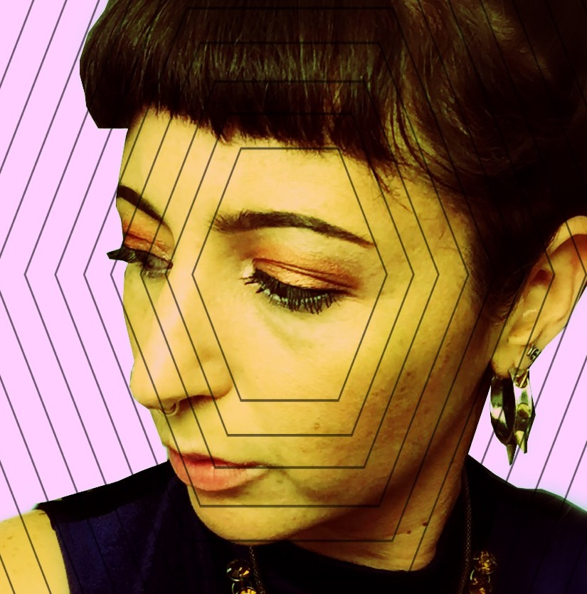

About me

Hi everyone and welcome to my pathetic but noble attempt at making a Portfolio Website. Some grown-up stuff: I graduated from SFSU with a BA in Psychology and a double minor in Chemistry and Biology. I thought I was going to be a shrink, then a shrink that could give you drugs, then a veterinarian. Then I realized that's a lot of school and a @#$%ton of money so I ended up getting a job in tech in 2012 and have been in that world ever since. I specialize in QA, deployment, and agile product management.
Some fun stuff: I love music and go to a butt-load of shows and dj for shnitzel and giggles sometimes. I love the arts and doodle every now and then. I am a biology dweeb and love the ocean. I've recently picked up (and wiped out) surfing and my favorite animals are marine mammals. Well, excluding my perfect pibble, Goro.